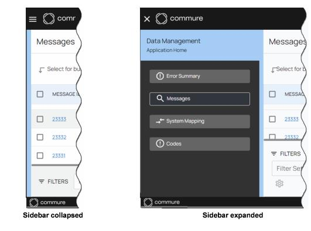
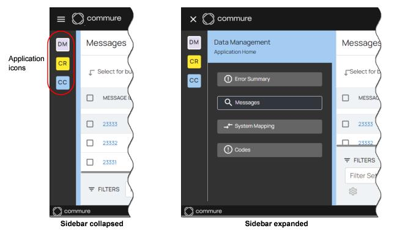
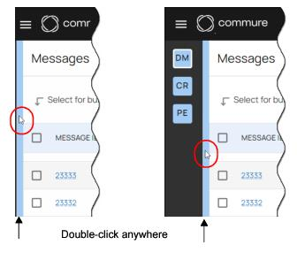

Sidebar
All Commure applications contain an expandable sidebar on the left side of the screen. If your organization has purchased only one application, such as the Data Management Application, then the sidebar looks as illustrated below. When the sidebar is collapsed, it shows nothing, and when it is expanded, it displays the application’s main options. Simply open the sidebar and then click on an option to select it.
If you organization has purchase more than one application, then the list of applications are always displayed as icons in the sidebar. You can click on an application icon to select that application, and this action also expands the sidebar to show the main options for the selected application.
There are two additional ways to open or close the sidebar:
•Method A: Click the Menu icon , located in the top left corner of the app, to open the sidebar. Click the Menu icon again to close the sidebar.
•Method B: Double-click anywhere on the light blue vertical bar to open the sidebar. Double-click on the bar again to close the sidebar. 
Last modified date: 10/19/2023